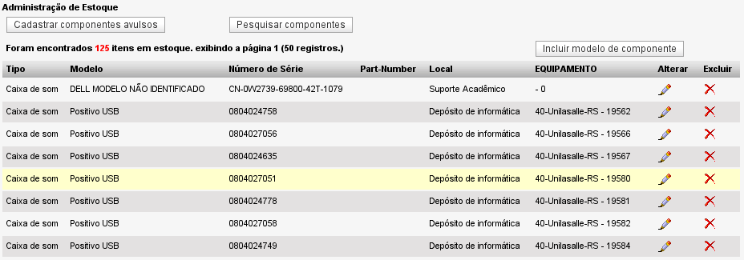

Visualização de componentes avulsos (Inventário -> Visualizar -> Componentes avulsos)
Essa tela exibe a listagem de componentes avulsos cadastrados no sistema.

Tela exibindo a listagem de componentes cadastrados - versão 2.0rc3
Funções a partir da listagem de componentes:
Botão Cadastrar componentes avulsos: botão para acesso rápido à função de
cadastro de componentes.
Botão Pesquisar componentes: botão para acesso à tela de pesquisa por componentes.
Botão Incluir modelo de componente: botão para acesso à tela de inclusão de modelos de componentes.
Outros links na tela:
Na coluna
Tipo, ao clicar em qualquer linha o sistema redireciona para a tela de detalhes do componente selecionado.
na coluna
Equipamento, ao clicar em qualquer número de etiqueta, será exibida a tela com os detalhes de configuração do equipamento em que o respectivo componente está agregado.